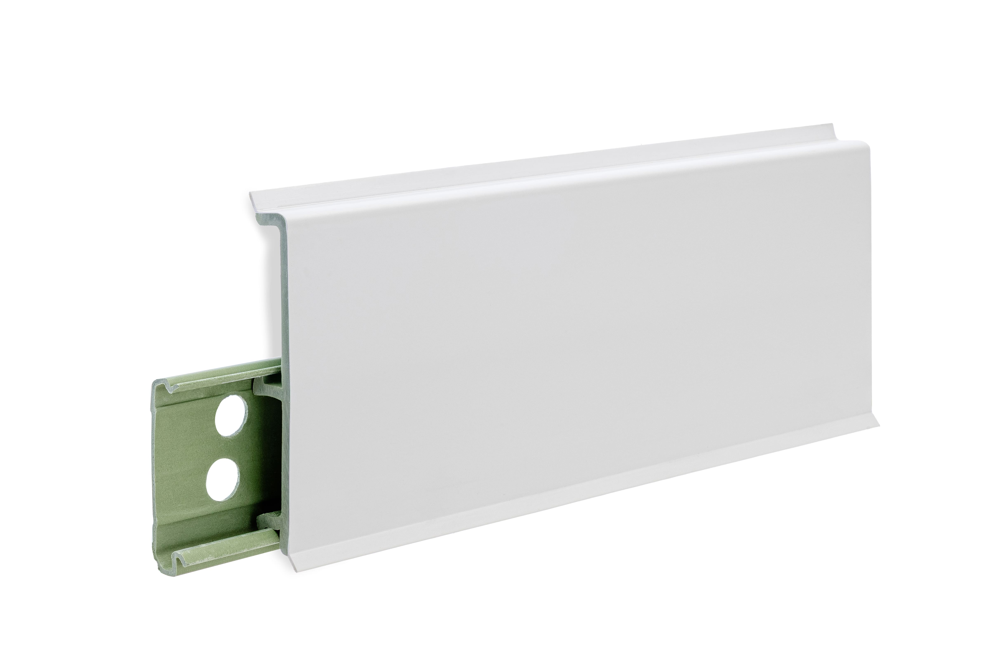
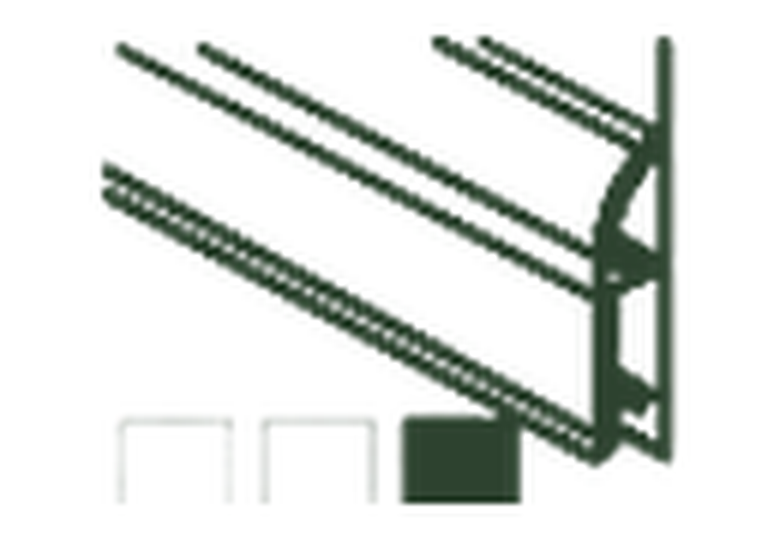
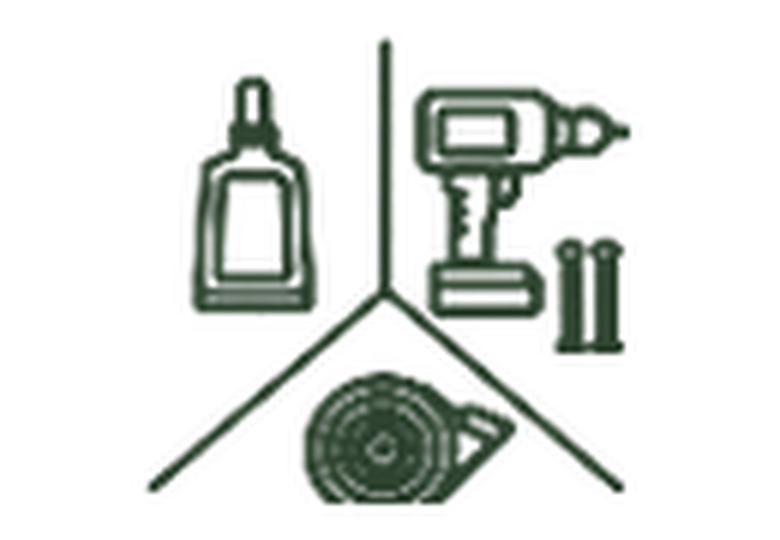
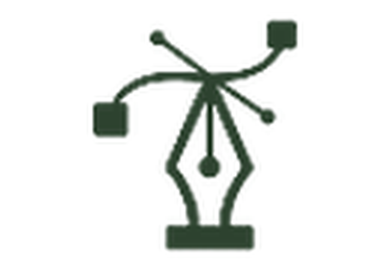
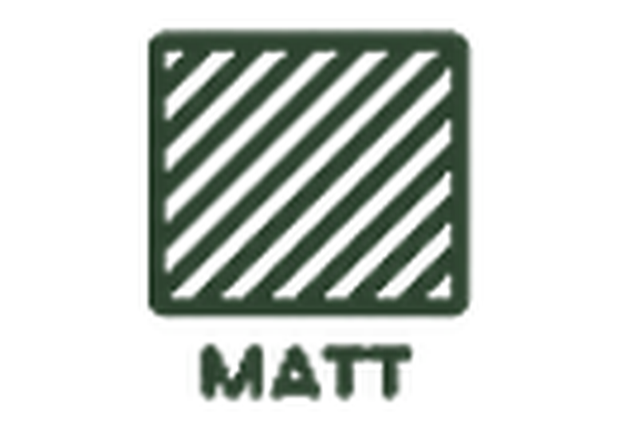
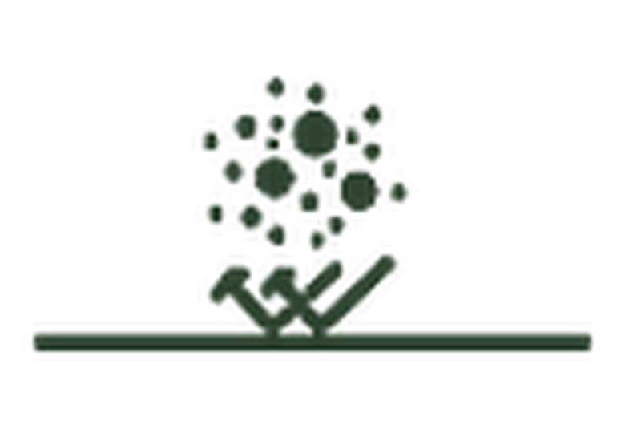

Esnek kenar contası
Yamuk duvar ve zeminden
kaynaklanan hataları esnek
kenarlarıyla örter.


Yamuk duvar ve zeminden
kaynaklanan hataları esnek
kenarlarıyla örter.
Yerel elektrik kurallarına
bağlı olarak düzenli kablo
geçişi için gizli arka kanal.
Modern ve sade iç mekân
detayları için düşük
parlaklıkta yüzey görünümü.
Taş Polimer Kompozit
yapı kurşunsuz beyan
edilir ve geri dönüşüm
süreçlerine uygundur.
| Özellik | Referans / yöntem | Beyan edilen değer |
|---|---|---|
| Ürün modeli | Dahili tanım | Moderna 100 |
| Profil tipi | Ürün kategorisi | Taş Polimer Kompozit Süpürgelik |
| Nominal yükseklik | Profil ölçüsü | 100 mm |
| Derinlik | Profil ölçüsü | 22 mm |
| Kimyasal yapı | Malzeme beyanı | Taş Polimer Kompozit |
| Yoğunluk | Beyan edilen performans | 1.8 g/cm³ |
| Basınç altında çökme | Beyan edilen performans | 0.3 mm |
| Vicat yumuşama sıcaklığı | TS EN 13245-1 | 68.3 °C |
| Çekme-darbe dayanımı | TS EN ISO 8256 | 179 kJ/m² |
| Isı destekli şekillendirme | Uygulama yöntemi | Kavisli duvarlarda ısıyla form verilebilir |
| Su emme - tam daldırma | Beyan edilen performans | < 0.3% hacimce |
| Havadaki neme dayanım | Beyan edilen performans | Etkilenmez (< 0.04%) |
| Yangına tepki sınıfı | TS EN 11925:2020-07 | D |
| Isıda boyutsal değişim | +80 ± 2 °C | Maks. 2% |
| Kurşun içeriği | Malzeme notu | Kurşunsuz |
%100 sudan ve
nemden etkilenmez.

Zemin ve duvar
kaplamalarıyla uyumlu
renk seçenekleri.

Yerel kurallara bağlı
TV/elektrik kablosu için
gizli arka kanal.
Gönye testere veya
uyumlu aksesuarlarla
temiz köşe geçişleri.

Çağdaş iç mekânlar
için düz ve minimal
görsel çizgi.
Kompozit çekirdek,
günlük iç mekân
dayanımı sağlar.

Düşük parlaklıkta,
rafine ve yansımasız
görünüm.
Hızlı saha montajı için
uygulama dostu profil.

Esnek kenarlar
görünür duvar-zemin
boşluklarını kapatır.
Esnek kenarlar
küçük yüzey
bozukluklarına uyum sağlar.
Yaygın zemin kaplamaları ve
duvar-zemin geçişleri için tasarlanmıştır.
Renk uyumlu köşe parçaları,
bitiş kapakları ve bağlantılar
uygun yerlerde planlanmalıdır.
Aksesuar yoksa hassas 45°
gönye kesim uygulanmalıdır.
Amaçlanan kullanım ve
temel teknik şartlar için
EN 13245-2:2008
referans alınmıştır.
Performans değişmezliği
değerlendirme ve doğrulaması
AVCP Sistem 4 kapsamında
beyan edilmiştir.
Yangına tepki sınıfı: D.
Kaynak teknik dokümanda
TS EN 11925:2020-07
standardına referans verilmiştir.
Kermit Moderna 100; dayanıklı yüzeye, rijit
kompozit çekirdeğe ve duvar-zemin temasını
temizleyen esnek kenar contalarına sahip yüksek
performanslı kompozit süpürgelik profilidir.
Ürün kurşunsuz ve geri dönüştürülebilir olarak
beyan edilir. Bu föy, ilgili beyan veya belirli ürün
partisine ait sertifika ile desteklenmeyen geniş
çevresel iddialardan kaçınır.
Profilleri montaj öncesinde
uygulama alanında bekletin.
Düz konumda ve ısı
kaynaklarından uzakta tutun.
Yüzey temiz, kuru, sağlam,
tozsuz ve duvar-zemin
birleşimi boyunca mümkün
olduğunca düz olmalıdır.
Profilleri uygun gönye
testereyle kesin. İç/dış
köşelerde temiz sonuç için
45° kesim veya uyumlu
aksesuar kullanın.
Proje koşullarına göre
uyumlu yapıştırıcı veya
mekanik sabitleme kullanın.
Esnek kenarların boşluğu
kapatması için sıkıca bastırın.
Orijinal ambalajında yatay
şekilde depolayın; toz,
doğrudan güneş ve aşırı
sıcaklık değişiminden koruyun.
Rutin temizlik için nemli
silme yeterlidir. Kirleri,
esnek kenarlar ve birleşimlerde
sertleşmeden önce temizleyin.
Yalnızca iç mekân bitiş profilidir.
Yapısal değildir ve taşıyıcı
performans gereken yerlerde
kullanılmamalıdır.